A Unified, Enterprise-Grade Operational Guidebook for Central Administrative Governance, 7 Regional Nodal Zone Workspaces, 50,000+ Scalable Database Architecture, 200 Real-Time Concurrency, Instant In-Memory Tab Switching, Global UI Error Shields, and Dual-Layer Emergency Restore.
The National Digital Library of India (NDLI) Club initiative, coordinated by the Indian Institute of Technology Kharagpur (IIT Kharagpur) under the Ministry of Education, Government of India, empowers educational institutions across secondary schools, universities, and research institutes throughout all 36 States and Union Territories.
To support institutional onboarding, regional verification, and continuous field engagement, the NDLI Club Management and Employee Activity Tracking System was architected and developed by Dr. Anirban Mukherjee as an enterprise-grade operational backbone.
This operational handbook provides authoritative guidance for Central Administrative Officers at IIT Kharagpur, the 7 Regional Zonal Officers managing daily zonal operations, and DevOps engineers overseeing cloud deployments.
#103125, #1A503E, #0D7751) accented by warm amber (#D97706)
and sky-blue live clock telemetry (#38BDF8). Verified developer attribution to Lead Architect
Dr. Anirban Mukherjee appears in system metadata, headers, certificates, and endpoints.
The platform integrates an enterprise-grade suite of administrative governance and high-capacity execution capabilities:
Sub-millisecond O(1) hash indexing (0.64ms lookups), fast-path row append (13ms), zero-allocation aggregations, and 50-row pagination handling 50k+ records smoothly.
Threaded HTTP architecture (512 queue slots), atomic RLock thread shields, and bounded upload semaphore stress-tested at 200 concurrent tasks in 179ms (0 errors).
In-memory preloading for Universal Search (Tab 2) and Node Activity Logs (Tab 3). 0ms tab switching, instant filtering (<35ms), and automatic connection retry.
Global client error interceptors, 10-tier Windows lock backoff, HTTP 500 crash isolation, and one-click codebase restore utilities (restore_to_stable_v2.bat).
Real-time KPI telemetry, Donut and Trajectory charts, Renewal Attention centers, and multi-dimensional scope filtering by Zone and Academic Year.
Deep-frosted glass card with NDLI orbit logo animation, live IST clock, CAPTCHA verification, amber unlock button, and zero-vertical-scroll employee view.
12 one-click utility shortcuts: osTicket (club-support.ndl.gov.in), 8 Google Workspace services (Gmail, Meet, Drive, Docs, Sheets, Slides, Keep, YouTube), Zoom, Teams, StreamYard.
Statutory 50/30/20/10 weighted formula evaluating regional officers with dynamic 1-to-5 star ratings, filtered by Year, Month, and State.
Exhaustive roster covering all 36 States & UTs with real-time club density, color-coded health indicators, and no-horizontal-scroll layout.
Heuristic intelligence formulating policy recommendations, identifying penetration deficits, and generating 30/90/365-day milestone roadmaps.
Generates official IIT Kharagpur Renewal Certificates embedding seals, dynamic signatories, Sutradhar typography, instant vector PDF export, and a publicly verifiable QR code (§7.10.3).
Automated cloud mirroring of 7-day and manual ZIP backups directly into Google Drive with strict 6-archive rolling retention and point-in-time copies before destructive actions (§7.8).
A floating assistant in both portals answering live-data and documentation questions — read-only, role-scoped, with numbered citations, deep links, and proactive nudges (§6.7).
Renewal certificates embed a signed QR token: anyone holding the printed certificate can verify it online — no account needed, no search facility, no personal data exposed (§7.10.3).
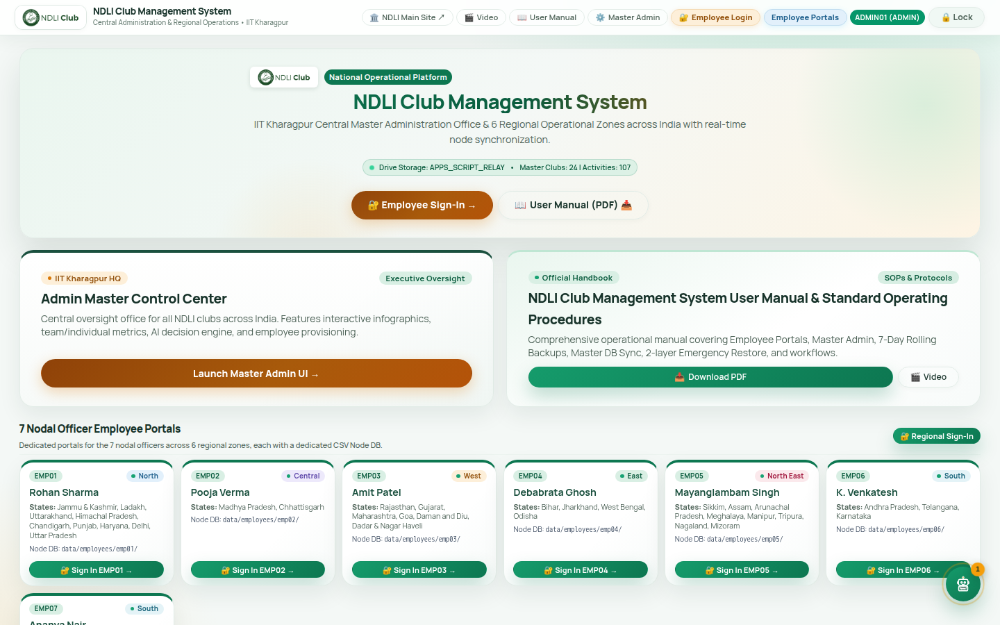
This index details all operational chapters and technical specifications contained within this manual:
The platform is powered by a high-performance, atomic CSV database engine. Every operation is schema-validated to guarantee consistency across master and employee node tiers.
| Database File | Schema Columns | Operational Function |
|---|---|---|
master_clubs.csv | id, reg_no, name, state, zone, patron_email, president_email, secretary_email, approved_by, approval_date, last_renewal_date, renewal_date | Stores all active NDLI Clubs nationwide. Enforces strict +1 year renewal invariants from the previous due date (rolled forward when in the past). |
master_activities.csv | id, emp_id, timestamp, support_type, notes, state, zone | Aggregated log of all field interactions (calls, ticket closures, webinars, offline campus visits) across India. |
master_quotas.csv | emp_id, emp_name, zone, clubs_approved, total_activities, last_activity, updated_at | Scoreboard tracking individual employee performance quotas and daily logging volume. |
master_users.csv | id, email, full_name, role, zone, assigned_states, is_active, created_at, password_hash, salt | Credentials database. Stored only as one-way PBKDF2-HMAC-SHA256 digests (100,000 rounds, per-user 16-byte random salts). |
master_issues.csv | id, club_id, club_name, emp_id, reported_at, issue_notes, status, next_reminder_date, resolved_at, resolution_notes | Engine for 72-hour employee reminders, 7-day recurrent cycles, and 30-day Admin escalations. |
| User ID | Regional Officer | Zone | Territorial Jurisdiction (36 States & UTs) |
|---|---|---|---|
EMP01 | Rohan Sharma | North | Jammu & Kashmir, Ladakh, Uttarakhand, Himachal Pradesh, Chandigarh, Punjab, Haryana, Delhi, Uttar Pradesh |
EMP02 | Pooja Verma | Central | Madhya Pradesh, Chhattisgarh |
EMP03 | Amit Patel | West | Rajasthan, Gujarat, Maharashtra, Goa, Daman and Diu, Dadar & Nagar Haveli |
EMP04 | Debabrata Ghosh | East | Bihar, Jharkhand, West Bengal, Odisha |
EMP05 | Mayanglambam Singh | North East | Sikkim, Assam, Arunachal Pradesh, Meghalaya, Manipur, Tripura, Nagaland, Mizoram |
EMP06 | K. Venkatesh | South | Andhra Pradesh, Telangana, Karnataka (South Sector 1) |
EMP07 | Ananya Nair | South | Tamil Nadu, Puducherry, Kerala, Andaman & Nicobar Island, Lakshadweep (South Sector 2) |
data/employees/empXX/ containing
clubs.csv (their authorized clubs) and activity_log.csv (their daily interaction log).
All entries are automatically synchronized to the Central Master databases via the Node-to-Master Sync Engine.
/).
The gateway requires verification of administrator identity before revealing the central portal selector.
Regional Employees bypass this screen by navigating directly to /employee.
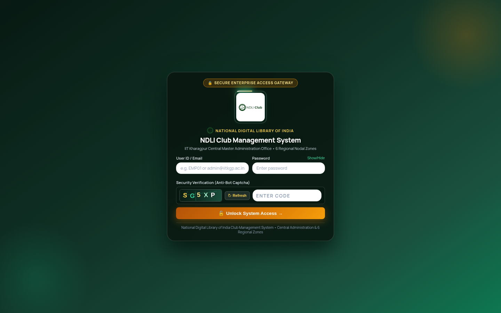
The Gateway employs a layered visual and cryptographic security architecture:
sessionStorage, automatically expiring when the browser tab is closed.https://ndli-club.onrender.com/. The glassmorphic lock card appears centered over the forest-green backdrop.The NDLI Club Employee Portal is the operational workspace for the 7 Regional Zonal Officers. It features real-time clock synchronization, pending reminder feeds, and structured data entry workflows.
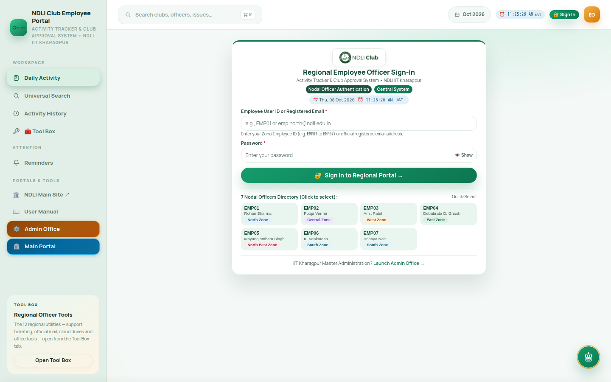
/employee or click "Sign In to Portal" on any EMP card in the main landing page./employee/EMP01 through /employee/EMP07. The Master Gateway's brute-force lockout applies here too: 8 failed attempts inside 10 minutes pause sign-in for 5 minutes (HTTP 429) — wait for the cool-off and sign in again with the credential issued to you by your administrator.
Zonal officers engage with educational institutions daily to resolve obstacles and conduct orientation sessions. Every interaction must be logged immediately in SEC A — Support Log:
activity_log.csv with automatic timestamping and synced incrementally to the Central Master Database.When an institution completes its registration requirements, authorize the club through SEC B & C:
CLUB-[STATE]-[YEAR]-[NUM]), official Registration Number, and Institution Name.master_clubs.csv.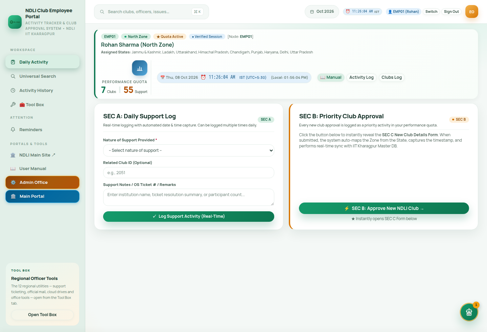
ALL_CLUBS_CACHE) upon login. Switching to Tab 2 renders in 0ms without network latency.Instant Activity Rendering: Navigating to My Node Activity History automatically pre-renders from ALL_ACTIVITIES_CACHE with 0ms delay (no manual refresh needed). An animated loader appears during live updates, with an inline ↻ Retry button for connection resilience.
The Tool Box tab in the Employee Portal centralizes all daily external services used by Regional Zonal Officers into a single-click launcher. Tools are strategically ordered: operational helpdesk first, followed by Google Workspace services, and concluding with virtual communication platforms.
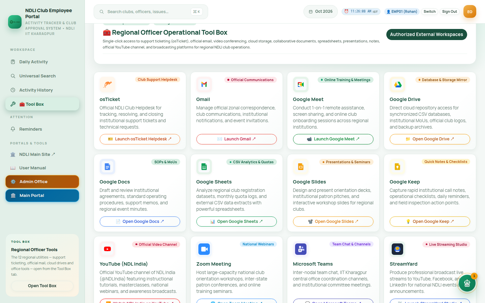
club-support.ndl.gov.in). Positioned first for swift issue ticket resolution.Both portals include Robu, a floating AI assistant (bottom-right button) that opens a chat panel. Robu is named after the resourceful robot from Satyajit Ray's Professor Shonku stories — built modestly, worth considerably more. She answers in plain language, shows her sources, and never touches your data.
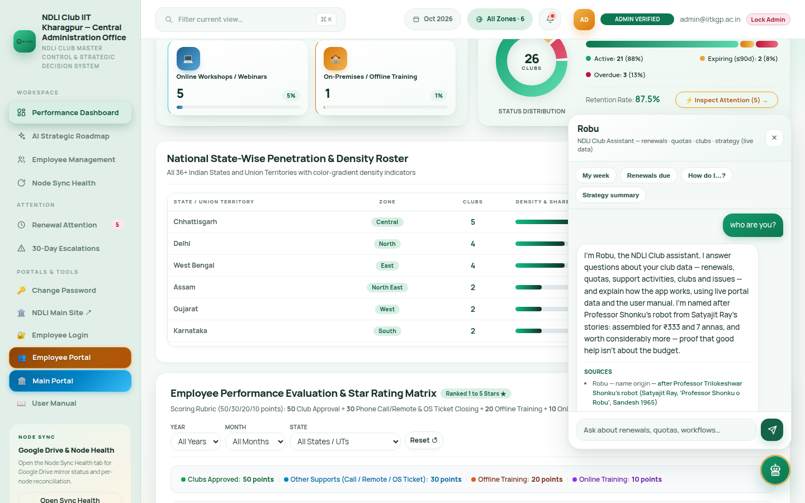
Per the client requirement of 2026-09-26, renewal certificates are a self-service task for regional officers: certificates are generated from the employee's own workspace, and the Principal-Investigator (PI) signature printed on them is managed by the officer directly. The Central Administration Office retains the standardization controls described in §7.10.2.
The Central Administration Office Portal at IIT Kharagpur is the executive master control console. It synthesizes field reports from all 7 regional zones into actionable statistical intelligence.
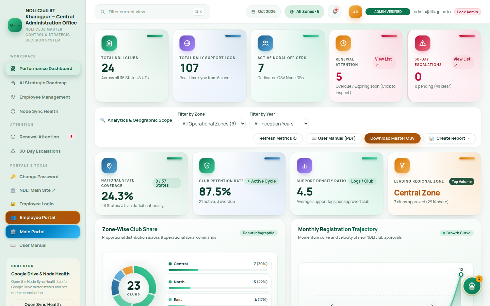
Administrative access is protected by role-based authentication of the administrator account issued by the Central Administration Office. The dashboard displays five top-level operational meters:
The dashboard renders dynamic visual charts representing national adoption patterns:
Issues unresolved at the regional level for more than 30 days automatically trigger central escalation:
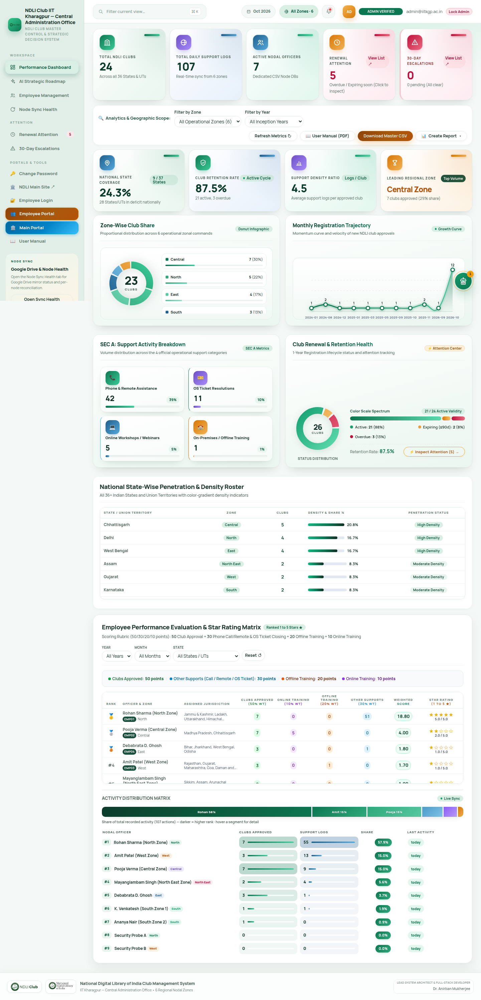
The Employee Performance Evaluation & Star Rating Matrix provides an objective merit evaluation of all 7 regional zonal officers based on an approved multi-criteria weighting formula:
| Evaluation Metric | Weightage | Operational Significance |
|---|---|---|
| New Club Approvals | 50% Weight | Primary organizational KPI reflecting institutional expansion and onboarding capacity. |
| OS Tickets Closed & Remote Calls | 30% Weight | Measures responsiveness to club operational queries and problem-solving velocity. |
| Offline Field Training | 20% Weight | Physical campus workshops, library orientations, and direct faculty development sessions. |
| Online Training | 10% Weight | Virtual webinars, digital orientation sessions, and remote demonstrations. |
| Star Rating | Normalized Benchmark | Performance Appraisal Designation |
|---|---|---|
| ⭐⭐⭐⭐⭐ | 80% – 100% of Benchmark | Outstanding: Consistently exceeds institutional quotas, fast ticket resolution, proactive field engagement. |
| ⭐⭐⭐⭐ | 60% – 79% of Benchmark | Commendable: Strong performance across onboarding, ticket closing, and training. |
| ⭐⭐⭐ | 40% – 59% of Benchmark | Satisfactory: Fulfills standard institutional quotas and baseline activity targets. |
| ⭐⭐ | 20% – 39% of Benchmark | Needs Improvement: Below expected club onboarding velocity or lagging ticket resolution. |
| ⭐ | 0% – 19% of Benchmark | Critical Deficit: Immediate administrative consultation and field support required. |
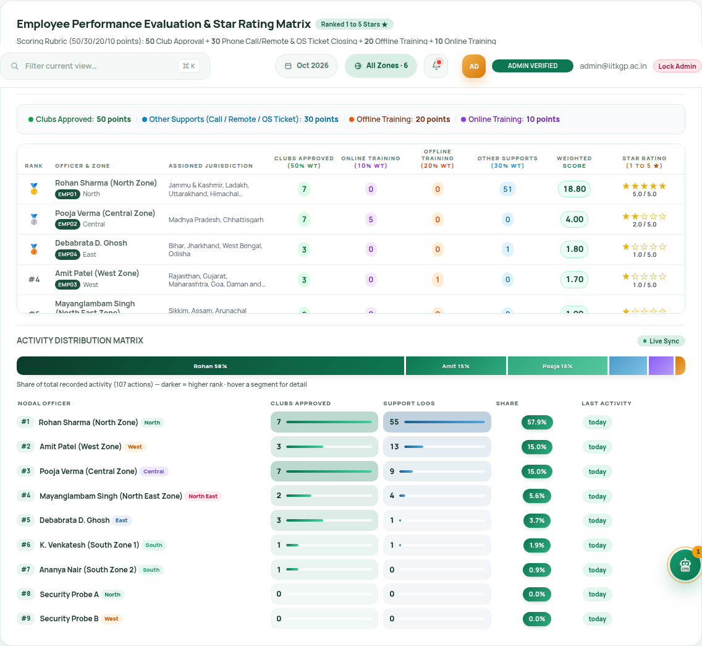
The National State-Wise Penetration & Density Roster renders all 36 States and Union Territories with zero horizontal scrolling, enabling instant nationwide assessment:
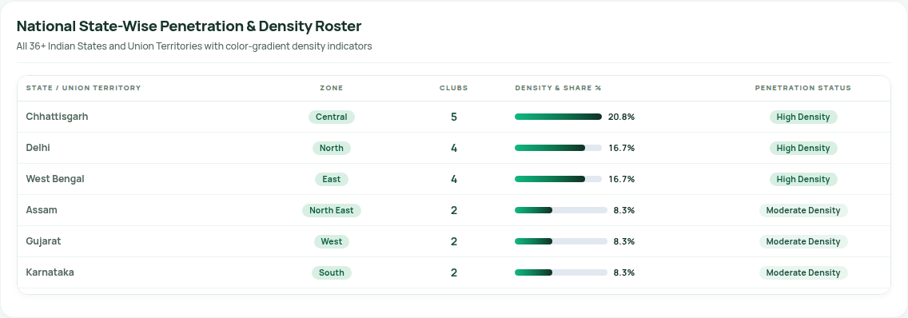
The AI Strategic Decision Engine executes continuous heuristic evaluation across the aggregated master databases to generate strategic recommendations for central leadership:
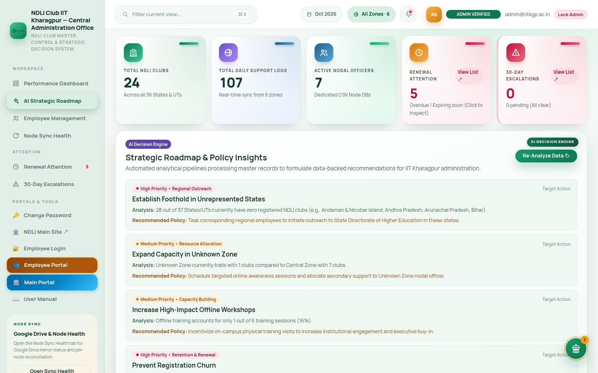
The Admin dashboard also ships a Comprehensive Report Generator: the compact Create Report button (dashboard toolbar, right-hand side) opens a short PDF / DOC menu — pick the format and the full national picture is assembled into a print-ready document covering the executive summary, national snapshot, detailed statistical analytics, the field-difficulty tier split, the AI strategic roadmap (30/90/365-day), employee performance analysis, and generation metadata. The report is the only printable surface while it is open, so exports stay clean and presentation-ready. For a plain-language walkthrough of any recommendation, ask Robu to "explain the report" (§6.7).
The Master DB Reconciliation module (operated via the "Run Full Node-to-Master Reconciliation" button in the Admin Office Portal) serves as the primary system-wide data integrity and state recovery mechanism for IIT Kharagpur:
data/employees/emp01/ through emp07/, plus any newly provisioned officers), inspecting their local clubs.csv and activity_log.csv files.master_quotas.csv and the Employee Performance Evaluation & Star Rating Matrix display 100% verified, tamper-proof ratings.The platform incorporates an autonomous background backup engine and disaster recovery console:
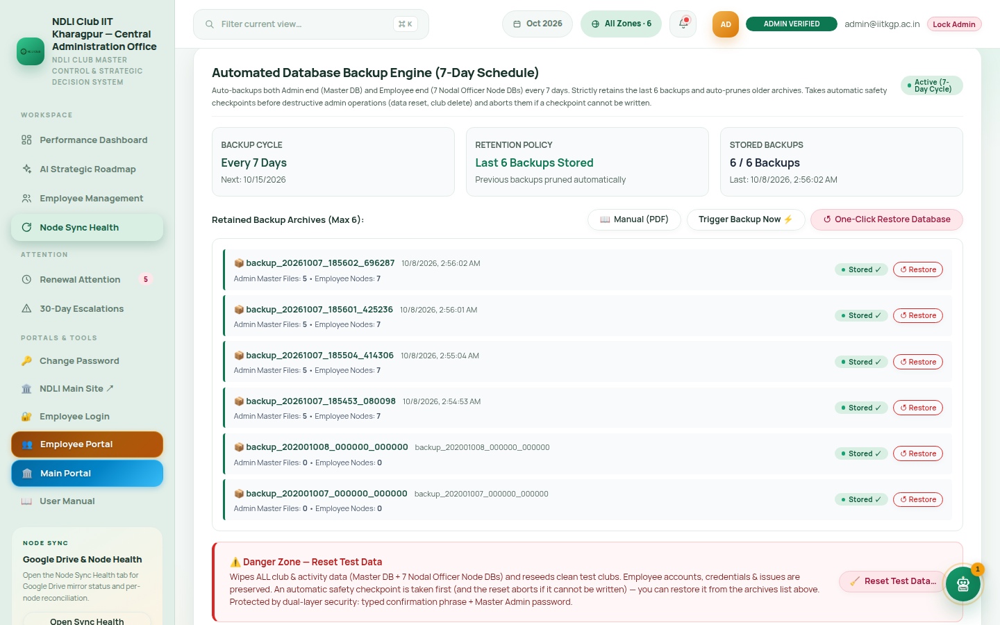
MAX_RETAINED_BACKUPS = 6). All older archives are automatically pruned, preventing storage bloat.backups/ repository via Webhook Relay.drive_sync status field ("SUCCESS" only when the Drive relay confirmed receipt; "FAILED" otherwise).sync_issues.log in the data directory together with a loud entry in the server log — an empty log with "SUCCESS" statuses is the healthy state.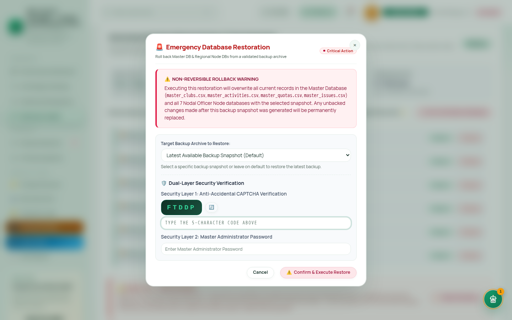
restore_to_stable_v2.bat and python restore_stable_v2.py, instantly rolling back the application to the certified Most Stable Version 2 (stable-v2, commit 3f864f1).
The Central Administration Portal provides centralized control over all Regional Officer accounts:
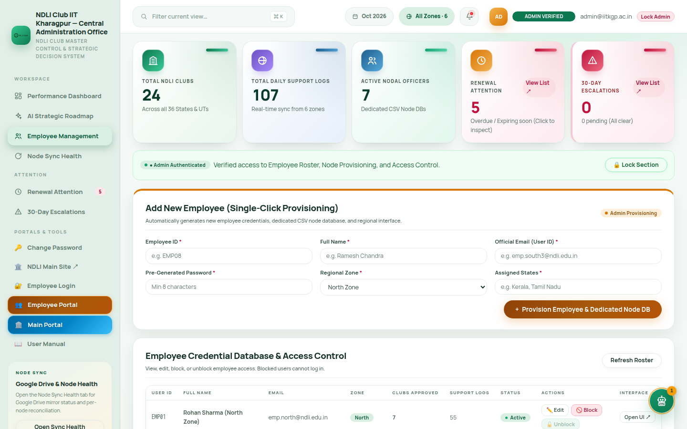
emp08), dedicated CSV databases, and credentials.Administrators can configure the layout and visual assets of official NDLI Club Verification Certificates, including authorized signatory designations, high-resolution PNG signatures, and the official IIT Kharagpur institutional seal:
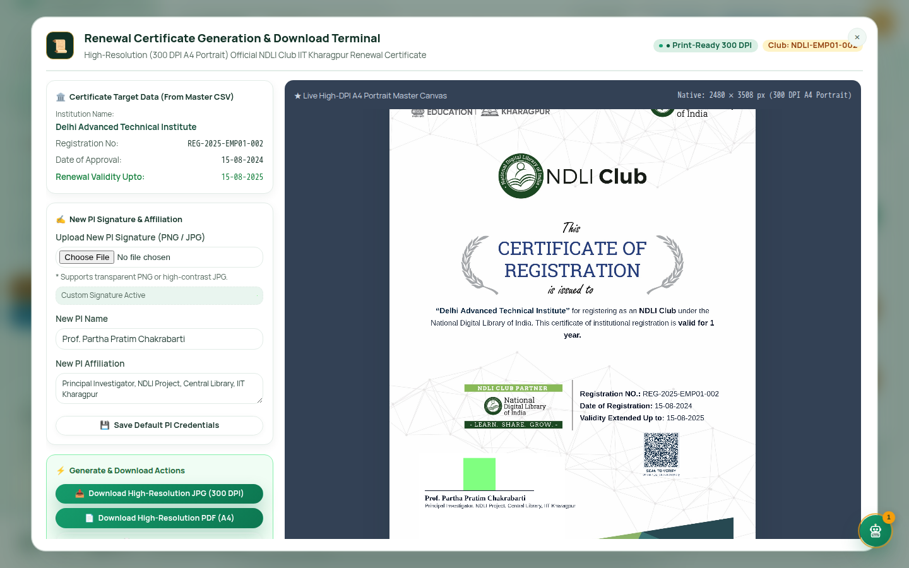
Every renewal certificate generated in the portal — by a regional officer (§6.8) or by the Central Office (§7.10.2) — embeds a publicly verifiable QR code in its print layout. Scanning it opens the public verification page: no login, no account. The page authenticates the certificate in real time and shows the club's current registration status, so any third party holding the printed certificate — an institution, a funding body, a verification desk — can confirm it in seconds. The window is documented here exactly as deployed: it has been reviewed and confirmed fit for purpose, and no changes to it are proposed.
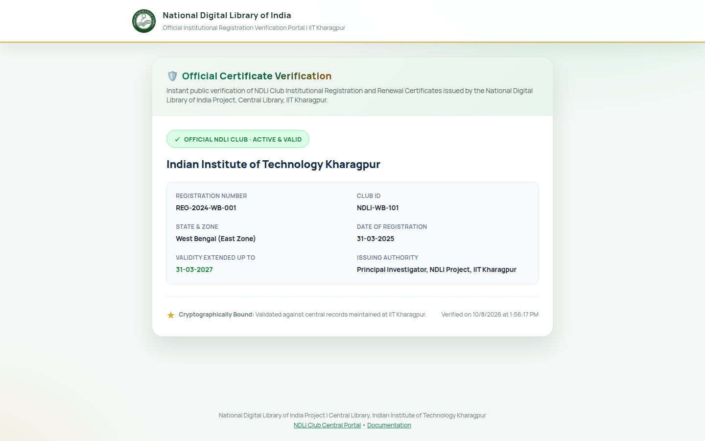
v1.<key_id>.<payload>.<signature>,
signed with HMAC-SHA256 by a server-managed signing key. The operator controls that key (via the NDLI_QR_SIGNING_KEY
environment variable); otherwise a strong key is generated once and held with restrictive file permissions — there is no
repository-visible fallback, so a token is never forgeable from public sources.key_id), so certificates issued earlier remain attributable after the
operator rotates the signing key.The result card presents certificate facts only: institution name, registration number, club ID, state & zone, date of approval, validity status (ACTIVE & VALID or EXPIRED — RENEWAL DUE), and a verified-at timestamp. It never exposes patron/president/secretary contact details or any internal record (§9.3). If the verification service is temporarily unreachable, the page says so plainly instead of guessing.
The user interface incorporates an ergonomic design system across all three portals (Master Landing, Employee Workspace, and Admin Control Center). The portal shell follows the approved Sample-C layout — a fixed left sidebar carrying the brand and sectioned navigation (with active states and count badges) plus a slim topbar above a roomy content column; every colour, spacing step, corner radius and elevation level comes from one shared design-token set, the R21 dashboard pass extends that same language into the analytics surfaces, feedback is delivered through toast notifications, and the floating Robu assistant launcher (§6.7) sits in the corner of both working portals:
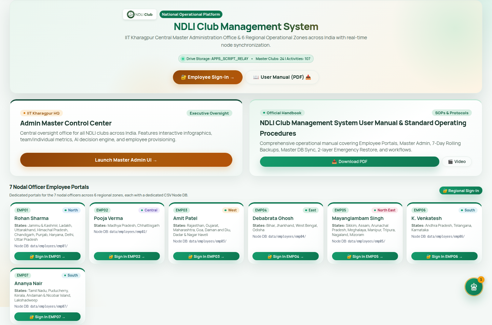
Google Fonts Manrope (geometric sans-serif with superior legibility) paired with Inter for dense numerical tables and data matrices.
High-contrast complementary color styling on navbar action buttons ("Employee Login", "Employee Portals") and warm amber CTAs for immediate visual recognition.
Master lock card and modal overlays utilize deep-frosted glass effects with backdrop-filter: blur(28px), ambient diffusion, and multi-layered borders.
Compact form heights and equal-width officer chip grids eliminate vertical scrolling on standard viewports, maximizing active workspace visibility.
Modals open with spring physics (cubic-bezier(0.34, 1.56, 0.64, 1)), buttons ripple on click, and cards cascade in via an IntersectionObserver hook — one consistent motion language across both portals.
Save/delete confirmations arrive as non-blocking toast notifications (auto-dismiss, action-aware colours). Every interactive element shows a visible focus ring (ui-focusable) for keyboard users, dialogs carry ARIA labels and focus traps, and status changes are announced to screen readers.
ndli_club_management/
├── app.py # Threaded HTTP Server & REST API (512 slots, 35+ endpoints)
├── auth.py # PBKDF2 Password Manager & Session Token Engine
├── config.py # Global Ports, Schemas & Scalability Configuration
├── restore_stable_v2.py # One-Click Codebase Restore Utility (stable-v2)
├── restore_to_stable_v2.bat # Windows One-Click Codebase Restore Batch
├── db/
│ ├── csv_engine.py # O(1) Key Hash Indexing, Mutex Locking & 10-Tier Retry
│ ├── sync_engine.py # Node-to-Master Synchronization & Fast ISO Parser
│ ├── storage_adapter.py # Local & Bounded Drive Sync (_UPLOAD_SEMAPHORE=4)
│ └── backup_engine.py # 7-Day Scheduler, ZIP Archiver & Retention Safeguard
├── tests/
│ ├── test_scaling_benchmark.py # 50,000 Club Records Benchmark
│ └── test_scale_50k_and_concurrency.py # 200 Concurrent Requests Stress Test
├── docs/
│ ├── user_manual.html # This document (HTML source)
│ └── NDLI_Club_Management_User_Manual.pdf # Compiled 24-Page User Manual
└── templates/ & deployment_gas/ # Dual-Deployment 100% Synced Portalskey_indices) for O(1) sub-millisecond lookups, appends new rows directly in O(1) (~13ms) without rewriting multi-megabyte files, and handles 200 concurrent HTTP requests via bounded thread queues in <180ms.
restore_to_stable_v2.bat or python restore_stable_v2.py to return instantly to certified stable-v2.
This charter states plainly what the platform stores, why it is collected, who may see it, and how long it is kept. It covers both portals, the Robu assistant, and the public verification window — and it is written to be read, not to be legal cover.
drive_sync outcome ("SUCCESS"/"FAILED"), and failures are written to sync_issues.log (§7.8).Questions and 👍/👎 feedback are logged to improve future answers. Robu is strictly read-only and role-scoped (§6.7); the interaction audit trail exists for quality and safety review only.
The Principal-Investigator signature image is uploaded and managed by the regional officer (§6.8); every upload is validated (genuine image magic bytes, 2 MB cap) and attributed. Public QR verification proves authenticity without exposing any personal data (§7.10.3).